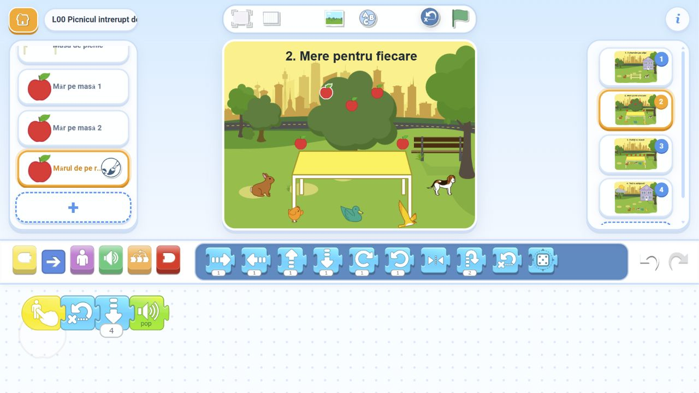

Lecția 0 · Poveste și programare
Picnicul întrerupt de ploaie

50 de minute · 6–7 ani · laptop și proiector · lucrăm în ScratchJr
Cinci prieteni pregătesc un picnic. Îl chemăm pe cățel, culegem mere pentru fiecare și îi poftim la masă. Norul de furtună schimbă planul: trebuie să-i conducem pe toți la adăpost.
Desfășurătorul lecției · Toate lecțiile
Ghidul profesorului și toate soluțiile
Ghidul profesorului — ce spui și ce faci, pas cu pas
Fiecare activitate are un model ScratchJr complet, editabil. Selectează orice personaj din stânga ca să-i vezi programul.
- Cele patru scene principale: soluția completă a poveștii. Pentru lucru live: Construim împreună.
- Rezerva 1 — Ocolul cu Repetă: soluția rezolvată.
- Rezerva 2 — Dansăm și înghețăm: soluția rezolvată.
- Rezerva 3 — Scuturăm pomul: soluția rezolvată.
- Rezerva 4 — Cei trei, primii: soluția rezolvată.
- Rezerva 5 — A trecut ploaia: soluția rezolvată.
Soluțiile rezervelor au câte o singură pagină. Cele trei provocări noi se pot construi pe paginile 2–4 ale poveștii; modelele separate sunt pentru demonstrație și verificare.
Pregătire
- Descarcă proiectul complet și varianta de construit. Nu dezarhiva fișierele
.sjr. - Deschide ScratchJr în browser, portul comunitar ScratchJr Desktop Reborn. În galerie: Open → fișierul descărcat.
- Deschide L00 Construim picnicul pentru lucru cu copiii. L00 Picnicul intrerupt de ploaie este modelul complet.
- Apasă titlul proiectului, dă copiei tale un nume (de exemplu Picnicul clasei) și confirmă cu bifa. Lucrează în această copie.
- Verifică sunetul și proiectorul. Arată editorul când construiți codul, apoi mărește scena pentru a urmări acțiunea.
Importul se face numai pe laptopul profesorului. Copiii nu au nimic de copiat pe tablete. Toate imaginile și sunetul Pop sunt din biblioteca ScratchJr.
Cum lucrăm
Copiii descriu ce trebuie să se întâmple, aleg blocurile și prezic rezultatul. Un copil vine la laptop și adaugă o instrucțiune. Selectăm personajul în stânga pentru cod; îl apăsăm pe scenă pentru pornire. Grila ajută la numărarea pașilor, apoi o ascundem. La blocurile cu plic, alegem culoarea din săgeata mică de sub bloc. Dacă plicul nu se vede imediat în browser, selectarea culorii îl redesenează.
1. Îl chemăm pe cățel · 5–13 minute
Cățelul așteaptă lângă casă. Gardul se află între el și iepuraș. Cum ajungem la prieten fără să trecem prin gard?
Iepuraș: La steag → Înapoi acasă → Sus 3 → Dreapta 10 → Jos 3.
Pornim cu steagul verde. Copiii urmăresc cele trei laturi ale ocolului. La contactul cu gardul, iepurașul revine la plecare. Când atinge cățelul, acesta răspunde „Vin la picnic!”, se aude Pop și se deschide pagina cu mere. Aceste reacții sunt deja pregătite în varianta de construit.
2. Mere pentru fiecare · 13–23 minute
Vedem cinci prieteni, două mere pe masă și trei mere în copac. Câte mai culegem ca fiecare să primească unul? Copiii aleg cele trei fructe: 2 + 3 = 5.
Construim la cele trei mere din copac: La apăsare → Înapoi acasă → Jos → Pop. Merele de pe ramurile laterale coboară 4 pași; cel din mijloc coboară 3. Pornim pe rând și verificăm că toate ajung pe masă. Alegem apoi pagina 3 din dreapta.
3. Poftiți la masă! · 23–31 minute
Apăsăm steagul verde pentru a activa contactele, apoi apăsăm personajele pe scenă. Cele cinci mere așteaptă cinci prieteni. Chemăm întâi iepurașul și puiul. Ei merg la masă, ating câte un măr și se întorc. Câte mere mai sunt pentru cei care așteaptă? Vedem 5 − 2 = 3.
Iepuraș: La apăsare → Trimite roșu. Cățel: La apăsare → Trimite albastru.
Programele de primire sunt pregătite: roșu cheamă primii doi; albastru îi cheamă pe ceilalți trei. Fiecare face Sus 4 → Așteaptă 5 → Jos 4. Merele au La contact → Pop → Ascunde. Ascunderea înseamnă că fructul a fost mâncat, după atingere. Apăsăm Stop, apoi alegem pagina 4.
4. Toți la adăpost! · 34–46 minute · dificil
Norul se apropie. Casa este adăpostul; cei cinci prieteni sunt afară. Primii doi intră, apoi îi cheamă pe ceilalți trei. Nimeni nu trebuie uitat.
Completăm programul iepurașului: La roșu → Dreapta 8 → Sus 4 → Ascunde → Așteaptă 10 → Trimite albastru. Ascunde se folosește abia la ușa casei. Pornim apăsând norul.
Puiul intră împreună cu iepurașul. Mesajul albastru îi pornește pe ceilalți trei. Cățelul, care are cel mai lung drum din acest grup, trimite mov la sosire: norul pleacă, revine soarele și se aude Pop. Verificăm vizual că nu a rămas nimeni afară.
Arată și programul cățelului. De ce trimitem mesajul după deplasare? Dacă îl trimitem înainte, următoarea acțiune începe prea devreme. Provocare suplimentară: calculați drumul celorlalți — 6, 4, 2 și 0 pași la dreapta, apoi câte 4 în sus.
Ritmul întâlnirii
- 0–5: povestea, scena, personajele, blocurile și paginile.
- 5–31: primele trei scene, cu un copil diferit la fiecare intervenție.
- 31–34: pauză — doi copii mimează primii invitați, apoi vin ceilalți trei.
- 34–46: puzzle-ul dificil al adăpostului.
- 46–50: reluăm o scenă; un copil explică de ce ordinea blocurilor contează.
Dacă terminăm mai repede
Avem cinci opțiuni, aproximativ 25–35 de minute de rezervă în total. Alegem una sau două, după timpul rămas; nu trebuie parcurse toate. Duratele includ propunerile copiilor, construirea și testarea.
Două proiecte de rezervă
- Același drum, mai puțin cod · 5–7 minute: ocolim același gard, dar înlocuim Dreapta 10 cu Repetă 2 [Dreapta 5]. Pornim cu steagul. Comparăm unde ajunge iepurașul și numărăm 5 + 5.
- Dansăm și înghețăm · 5–7 minute: iepurașul pornește dansul celor cinci. Pasărea îi îngheață pe primii doi; trei continuă. Găsiți programele Repetă mereu și Oprește. Modificați cine primește semnalul de oprire.
3. Scuturăm pomul o singură dată · 4–6 minute
Misiune: „Prietenii așteaptă. Putem culege toate cele trei mere cu o singură apăsare pe copac?”
Lucrăm pe pagina 2, după ce am construit coborârea merelor. Adăugăm copacului La apăsare → Trimite roșu. La fiecare dintre cele trei mere din copac, înlocuim pornirea La apăsare cu La mesaj roșu; păstrăm Înapoi acasă, coborârea și Pop. Cele două mere de pe masă rămân fără program.
Apăsăm Reset Characters, apoi copacul o singură dată. Cele trei mere coboară pe masă. Copiii verifică 2 + 3 = 5 și explică de ce același mesaj poate porni trei programe. Pot veni trei copii, fiecare pentru câte un măr.
4. Cei trei prieteni au ajuns primii · 4–6 minute
Misiune: „De data aceasta, cățelul, rața și pasărea mănâncă primii. Iepurașul trebuie să-i cheme, iar cățelul îi va chema apoi pe ceilalți doi.”
Pe pagina 3, schimbăm mesajul trimis la apăsarea iepurașului în albastru, iar pe cel trimis de cățel în roșu. Păstrăm programele care primesc mesajele.
Pornim steagul, apăsăm iepurașul și așteptăm revenirea celor trei. Vedem că 5 − 3 = 2 mere rămân pentru ceilalți. Apăsăm cățelul și verificăm a doua servire. Doi copii pot modifica pe rând câte un buton.
5. A trecut ploaia! · 7–9 minute · dificil
Misiune: „Soarele a revenit. O singură apăsare pe el trebuie să scoată toți prietenii din casă și să-i ducă la locurile lor.”
Pe pagina 4, adăugăm soarelui La apăsare → Trimite verde. Fiecare prieten primește un program nou: La verde → Arată → Jos 4 → Stânga. Păstrăm toate programele de intrare în casă.
- Iepurașul: Stânga 8.
- Puiul: Stânga 6.
- Cățelul: Stânga 4.
- Rața: Stânga 2.
- Pasărea: programul se termină după Jos 4; locul ei este chiar în fața casei.
Copiii urmăresc traseul de intrare și deduc drumul de întoarcere. Întâi rulăm furtuna până se încheie, apoi apăsăm soarele o singură dată. Verificăm că toți cinci sunt vizibili, la locurile de plecare. Pentru o nouă rundă: Stop, Reset Characters, apoi norul.
Aceste trei provocări se construiesc live în copia proiectului principal, folosind obiectele existente. Nu necesită alte fișiere sau imagini. Dacă au rămas doar câteva minute, alege o singură modificare și lasă un copil să explice rezultatul clasei.
Reluare și salvare
Apasă Stop, apoi Reset Characters înainte să reiei o scenă. Resetarea aduce înapoi merele și personajele ascunse. Paginile 2–4 se aleg din miniaturile din dreapta; doar întâlnirea cu cățelul schimbă pagina automat. Nu schimba pagina în timpul unui program.
Pentru salvare, întoarce-te în galeria ScratchJr și redeschide copia ta ca să verifici blocurile. Păstrează fișierele descărcate pentru o copie curată. În rezerve, oprește dansul înainte de a ieși.
Tot pachetul ZIP · Descarcă instrucțiunile text · Verificarea proiectelor